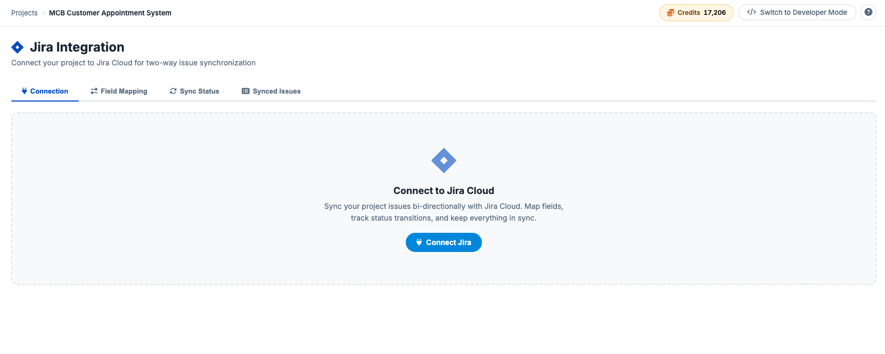
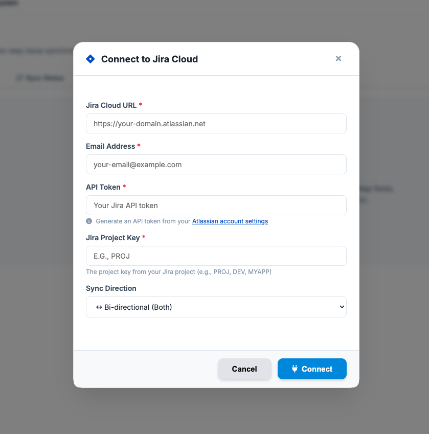

Jira
The Jira Integration module enables a powerful bi-directional sync between your project environment and Jira Cloud. This ensures that technical issues, task progress, and status updates remain consistent across both platforms, eliminating the need for manual duplicate entry.
Integration Overview
The dashboard is organized into four key areas to manage and monitor your connection:
- Connection: The primary setup tab used to link your project to a Jira Cloud instance.
- Field Mapping: Define how data points in this platform (e.g., Priority, Tracker) correspond to specific Jira fields.
- Sync Status: A real-time monitor showing the health of the connection and the timing of the last successful synchronization.
- Synced Issues: A dedicated list of all entries currently being tracked in both systems.

Connecting to Jira Cloud
To establish the link for the first time:
- Navigate to the Integrations section in the left sidebar and select Jira.
- Click the purple Connect Jira button in the center of the screen.
- Follow the authentication prompts to authorize the connection with your Jira Cloud credentials.
- Once connected, you will be able to select the specific Jira project you wish to sync with this workspace.

Managing Bi-Directional Sync
The integration is designed to work both ways:
- Platform → Jira: TWhen you create a new Issue or Task here, it can automatically generate a corresponding ticket in Jira.
- Jira → Platform: Updates made by external developers in Jira (such as changing a status from "In Progress" to "Done") will reflect back in your dashboard automatically.
Field & Status Mapping
To ensure data integrity, use the Field Mapping tab to align workflows:
- Status Transitions: Map your internal statuses (e.g., Resolved) to Jira's workflow steps (e.g., Fixed).
- Priority Levels: Ensure that an Immediate priority here triggers the highest urgency level in Jira.
- Assignees Link user profiles so that task ownership is preserved across both environments.